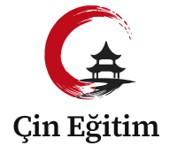
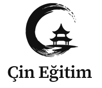
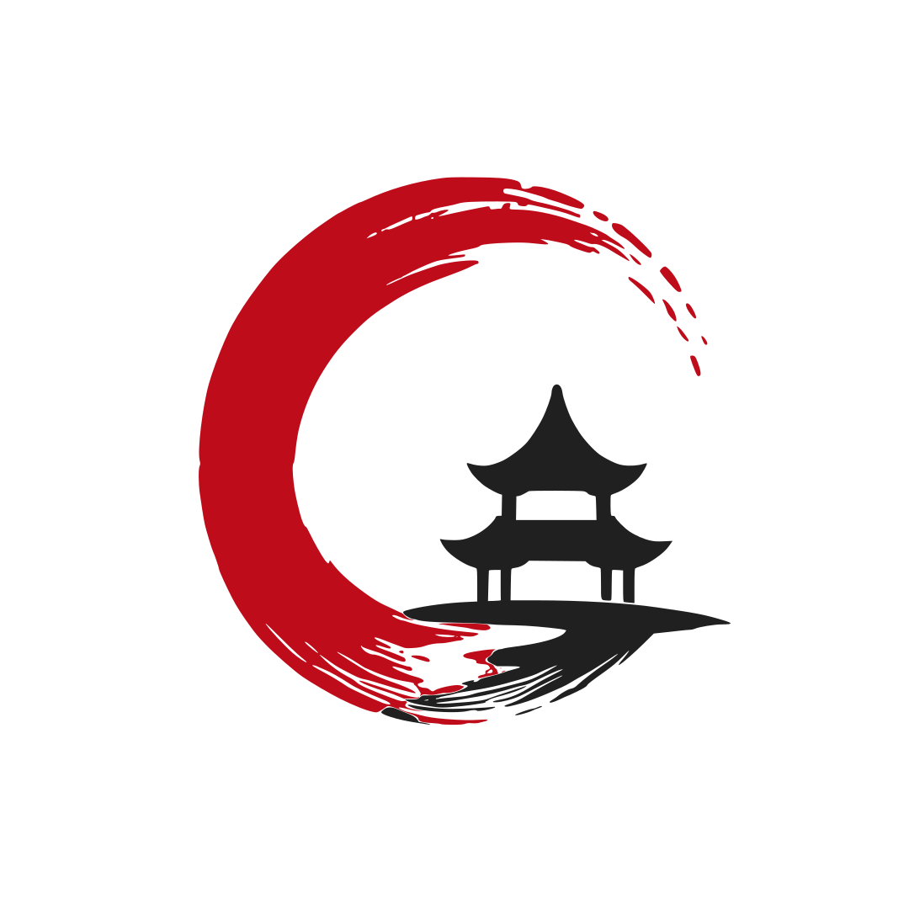
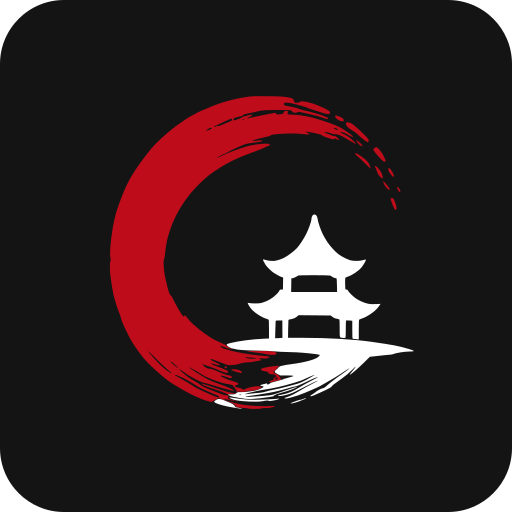
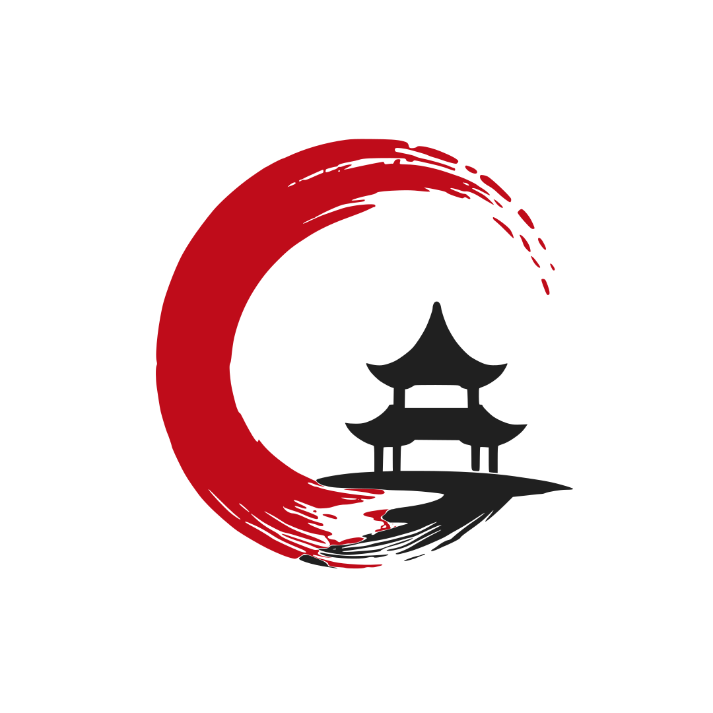

P-01 / Light (Standart Renkli)
Vermilion Kırmızı (#BF0C1A) + Mürekkep Siyahı (#202020 & #111111)
Kullanıcı onayıyla seçilen P-01 Yatay Ana Logo (Source Serif 4 SemiBold) temel alınarak inşa edilen eksiksiz kurumsal logo ailesi. Tüm varyasyonlar (P-01, H-02, C-03, D-04) bağımsız vektör SVG yolları olarak derlenmiştir; hiçbir ortamda font eksikliği veya oran sapması yaşanmaz.
Kurumsal yazışmalar, resmi evraklar, web sitesi ana başlığı (header), antetli kağıt, kartvizit ve kurumsal katalog kapakları için birincil tercih. Sembol solda, 2 satırlı "Çin / Eğitim" logotype sağda yer alır.
Vermilion Kırmızı (#BF0C1A) + Mürekkep Siyahı (#202020 & #111111)
Koyu zeminler için: Kırmızı Halka + Beyaz Pagoda ve Beyaz Logotype
Fotokopi, resmi mühür, gazete ilanı, tek renk siyah baskı
Kırmızı veya koyu renkli zeminler üzerinde tek renk beyaz lazer/serigrafi
Fuar roll-up bannerları (85×200 cm), afişler, bayraklar, tote bag bez çantalar, sahne arkalıkları ve dikey simetri gerektiren alanlar için dikey/merkezi kurgu.

Sembol üstte ortalı, "Çin Eğitim" tek satır dengeli altta

Koyu renkli afiş ve zeminler için yüksek kontrast

Dikey gravür, kaşe, ambalaj ve koli baskısı

Koyu arka planlar ve promosyonel dikey yüzeyler
Mobil gezinme çubukları (navbar), dar yatay web başlıkları, fatura üst bilgileri, sponsorluk logoları ve basık dikey alan kısıtı olan mecralar için tek satırlı kompakt varyasyon.
Düşük dikey yükseklik (60px), tek satır yatay hizalama
Karanlık mod ve koyu navigasyon çubukları
Yatay tek renkli şeritler ve dar resmi evraklar
Koyu web altlıkları (footer) ve yatay bantlar
Instagram, LinkedIn, YouTube, WeChat ve web tarayıcı sekmeleri için 1:1 oranında hazırlanmış dijital sembol ve ikon seti.



Logonun okunabilirliğini ve görsel gücünü korumak için çevresinde bırakılması zorunlu olan asgari güvenlik mesafeleri.
X Modülü: "Çin" kelimesindeki büyük "Ç" harfinin gövde yüksekliği olarak tanımlanmıştır. Logonun dört bir tarafında en az 1X kadar hiçbir metin, grafik eleman, sayfa kenarı veya kesim çizgisi bulunamaz.
| Varyasyon | Dijital Ekran (Min) | Baskı / Ofset (Min) |
|---|---|---|
| P-01 Yatay Ana Logo | 36 px yükseklik | 18 mm yükseklik |
| H-02 Dikey Logo | 64 px yükseklik | 25 mm yükseklik |
| C-03 Kompakt Logo | 26 px yükseklik | 12 mm yükseklik |
| D-04 Rozet / İkon | 24 px genişlik | 8 mm genişlik |
| Favicon | 16×16 px | — |
Çin Eğitim kurumsal kimliğinde kullanılan kanonik renk kodları ve dijital/baskı karşılıkları.